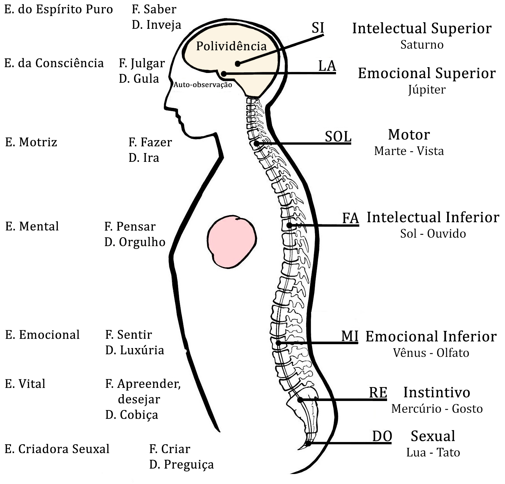

Conferência n°4
OS SETE CENTROS DA MÁQUINA HUMANA
Os objetivos desta conferência são:
- Conhecer que centros possuímos internamente. Saber como funcionam, que energias consomem, onde estão localizados, etc...
- Que possibilidades temos como seres humanos para desenvolvê-los, equilibrá-los e regenerá-los.
- Que função cumprem, qual é a sua atividade durante a vida diária e como economizar energia.
Os sete centros da máquina humana: (é importante notar aqui que ao falar de Centros nos referimos a algo que pertence ao Mundo Físico e, portanto ao Corpo Físico).
Centro Sexual:
- Localização: osso cóccix.
- Função: CRIAR, com três possibilidades de sexo:
- -Supra-sexo: Cria os filhos da luz; criação dos Corpos Existenciais do Ser;
- -Sexo-normal: reprodução da espécie (sem fornicar);
- -Infra-sexo: reprodução do ego animal.
- Energia: sexual.
- Sentido: tato.
- Defeito: Preguiça.
Centro Instintivo:
- Localização: osso sacro.
- Função: sua função consciente é "APREENDER" (capturar o profundo significado de qualquer situação vivida sem guardá-la na memória).
- Está encarregado de manejar todas as águas do microcosmo, portanto maneja a saúde do corpo físico, reprodução das células, o karma, etc...
- Maneja todos os átomos metálicos de nosso Mercúrio. Neles se encontram nosso Ego, por isso quando o Centro Emocional produz um desejo este Centro se apossa dele. Por isso diremos que cumpre a função de Aprender (sem duplo "e", o qual se dá pela memória das águas), através do desejo: DESEJAR é a função mecânica deste centro.
- Energia: vital.
- Sentido: gosto.
- Defeito: Cobiça.
Centro Emocional Inferior:
- Localização: na altura do umbigo sobre a coluna vertebral.
- Função: SENTIR: emoções positivas e negativas. As emoções positivas são originadas pela consciência; como o desejo de servir e amar. As emoções negativas nos fazem sentir prazer ou dor e rechaçam. Com emoções negativas nos enamoramos, sentimos prazer, alegria, odiamos, sentimos ressentimento e rancor. Devemos aprender a equilibrar este centro pois é o que maneja o fogo e portanto nos mantém adulterando a todo momento.
- Energia: emocional.
- Sentido: olfato.
- Defeito: Luxúria.
Centro Intelectual Inferior:
- Localização: na altura do coração sobre a coluna vertebral.
- Função: PENSAR: idear, planejar, projetar, recordar. Antes de fazer qualquer coisa primeiro planejamos, por isso se diz que os pensamentos são a origem das obras. Quando pensamos, assim não saibamos, estamos começando a criar. Da qualidade dos pensamentos depende a qualidade das obras. Temos que aprender a auto-observar este centro, visto que gasta muita energia (com os pensamentos negativos). A melhor forma de pensar é não pensar e saber escutar o coração.
- Energia: mental.
- Sentido: ouvido.
- Defeito: Orgulho.
Centro Motor:
- Localização: na altura da laringe sobre a coluna vertebral.
- Função: FAZER com Palavras, Obras e Omissões. O que mais fazem os seres humanos é falar toda classe de besteiras; quase nunca dizem nem fazem coisa úteis.
- Energia: motriz.
- Sentido: vista.
- Defeito: Ira.
Este é o centro do movimento. Está encarregado de todas as obras e palavras. Este centro é totalmente mecânico quando se encontra manejado pelo eu psicológico (somos zumbis). Ele aprende a fazer qualquer coisa e aperfeiçoa o movimento ate que não participa de forma alguma o pensamento. Se pensássemos quando este centro atua, poderíamos até matar-nos, por exemplo, quando conduzimos um veículo. Este centro maneja a vontade e enquanto tenhamos defeitos nossas obras estarão influenciadas por eles.
Centro Emocional Superior:
- Localização: glândula pituitária ou hipófise.
- Função: JULGAR, medir efeitos
- Energia: da consciência.
- Sentido: auto-observação ou clarividência.
- Defeito: Gula.
Centro Intelectual Superior:
- Localização: glândula pineal.
- Função: saber.
- Energia: do Espírito Puro.
- Sentido: polividência.
- Defeito: Inveja.
OS SETE CENTROS DA MÁQUINA HUMANA
O ESTADO ATUAL DOS CENTROS:
Em todos os seres humanos os centros se encontram desequilibrados, já que ninguém esta interessado em trabalhar sobre si mesmo e quase a totalidade dos seres não se conhecem a si mesmos. Dai que tenhamos que começar o trabalho por conhecê-los.
O centro instintivo como produtor de energias abastece a todos os centros inferiores e o excedente de energia é depositado no centro sexual. Este trabalho se faz durante a noite quando o corpo físico descansa.
Ao iniciar o dia cada qual de nós se encontra com as baterias cheias e começamos a gastar energia cada vez que usamos um centro.
Cada um de nossos pensamentos vai gastando a energia do centro intelectual, até esgotar sua carga inicial. Quando esta carga se esgota totalmente o centro intelectual rouba ao centro sexual para poder seguir trabalhando.
Cada uma de nossas emoções na vida diária esgota a energia do centro emocional e, por sua vez, vai roubando ao centro sexual.
Por sua vez, o centro sexual, para trabalhar, como tem sido saqueado durante todo o dia, tem que trabalhar com o excedente dos outros centros. Conclusão: não trabalha com sua própria energia e nada novo pode se criar.
Para o cúmulo dos males, pouquíssimos humanos conhecem o supra-sexo e quando chegam à prática sexual se esforçam para extrair a energia ou expulsá-la através do orgasmo e todas as reservas energéticas são extraídas para divertir-nos.
COMO SE EQUILIBRAM OS CENTROS
Os cinco primeiros centros estão caídos e trabalham equivocadamente. Os dois superiores não caíram e trabalham equilibradamente. Muito poucos seres humanos fazem uso dos centros superiores. A maioria faz mau uso dos cinco inferiores.
- Se vamos equilibrar os centros devemos aprender a observá-los primeiro.
- O segundo passo será aprender a economizar energia para que não haja saqueio do centro sexual.
Devemos começar a refletir em:
- O que é o Reto Pensar? Este pensamento não é do meu Ser, é de um Eu e tem que morrer.
- O que é o Reto Pensar? Este pensamento não é do meu Ser, é de um Eu e tem que morrer.
- O que é o Reto Pensar? Este pensamento não é do meu Ser, é de um Eu e tem que morrer.
- O que é o Reto Pensar? Este pensamento não é do meu Ser, é de um Eu e tem que morrer.
Se iniciamos esta estratégia veremos que são muito poucas as coisas que fazemos, dizemos, sentimos e pensamos que reúnam estes requisitos. Nos daremos conta que fazemos somente bobeiras, que nunca pensamos em nada útil, que nunca sentimos nada bom e que falamos até pelos cotovelos. Conclusão: fracasso.
Ao pôr em prática esta estratégia se iniciará a poupança de energia e esta nos permitirá, utilizando bem o sexo, criar os Corpos Existenciais do Ser e sair do estado animal em que nos encontramos atualmente.
Como qualquer possibilidade de Ser depende disto devemos começar a praticar imediatamente.